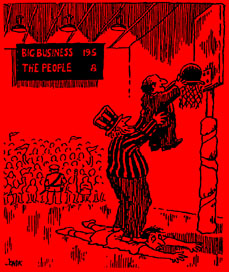

The Legacy of the Bunker Hill Mine
Part 1 - By Arthur J Miller
Deep within the mountains of the panhandle of Idaho is a valley that white people named Silver. This valley is the heart of what became known as the Coeur d'Alene Mining District. The Bunker Hill Mining complex, situated from the west end of the town of Kellogg and through the town of Smelterville, includes a silver, lead and zinc mine, a smelter, a zinc plant and a rail yard.
 Bunker Hill has had a turbulent history spanning over 100 years. Though Bunker Hill is now closed down (hopefully for good), the final story cannot be written, for the effects will linger on for generations to come. Many histories are written in such a way that they seem distant in time and place, but the story of Bunker Hill has a personal aspect for me because I once worked there.
Back in 1972, I wandered into the town of Kellogg with my stake, built while picking fruit in Oregon, nearly exhausted. I made my way down to the main drag where I found the employment office for the Bunker Hill Mining Company. The place was old and run down, and gave you a feeling of stepping back in time. Once inside they had me fill out a few papers, and without reading them, and no questions asked, I was told that I would begin work the following day. Because of my youth I was assigned to the cellroom of the zinc plant where I was to be a zinc stripper.
After being handed a few papers and being told to report for the graveyard shift the next day, I decided to scope out the town and find a place to camp until I made enough to pay some landlord for a flop. From the get go I could tell that there was something different about the people, something that I had never seen before. I guess you could say there was a haunting feel about them--a sense of tragedy, a hurting look in their eyes, something that you can't quite put into words. I knew the reason for what I saw. Five miles to the east of town 91 miners had died in the Sunshine Mine only a short time before. The date of that great fire, May 2, 1972 will always live on in the memory of those that live in the Silver Valley.
The Sunshine Mine was a maze of over 180 miles of tunnels reaching a mile below the surface. Old tunnels in the worked-out areas of the mine were not sealed off and were full of dried-out timber. Like the other hard rock mines in the area, the Sunshine Mine was what is called a "hot mine" Down in the hellish tunnels the temperature would exceed 100 degrees and the air was very dry. The timber would dry out and any source of ignition or sometimes even spontaneous combustion will set the timber burning.
Once the fire gets going smoke and carbon monoxide gas rapidly fills the mine's air stream and ventilation system. Once the smoke and gas reaches the miner's, there is only a minute or two before they lose consciousness. The fire started at the 3,700 foot level, trapping the miners below and forcing those above to flee for their lives. Though the law calls for two ways out of a mine, this one had only one. The miners rode an elevator down to their job sites, and this hoist was operated by workers from above.
Some of the hoist operators died at their posts trying to get their fellow workers out. Once the operators were overcome by smoke and gas there was no way out for the miners below. One operator later testified that "The men were choking, down on their knees." When the last hoist came up, "all the miners in it were lying on the floor--either dead or unconscious." He collapsed but was saved by a fellow miner. Nine days later the last of the 91 dead miners were found. On that same day came news of five more miners' bodies found in another mine fire in Farmington, West Virginia, where 78 miners had died and it had taken three years to find the last bodies.
Figures from the Federal Bureau of Mines show that before the fire, the Sunshine Mine had a injury rate five times the average for metal mines, and that the fatality rate was twice as high. Mining inspectors found 35 violations just two months before the fire. And that was in the areas they could inspect, the worked-out areas were too cluttered with old timber and other debris to be inspected. There had never been any fire drills in the mine, no fire escape plan, and the portable respirators were old, rusty and mostly unusable (and the miners had no training on how to use them).
Seven days after the tragedy, Irwin P. Underweiser, Chairman of the Board of the Sunshine Mining Company, spoke the following words to an Associated Press business editor. "In spite of the shutdown, we may make a profit on the closure. Insurance will cover cost of a shutdown of up to six months, although we don't anticipate such a lengthy closure. Also keep in mind that the Sunshine Mine is our nation's largest single silver producer. I wouldn't be surprised if the closure might put a crimp on the silver supply, forcing prices to go up in the ten percent neighborhood." And people wonder why I think the bosses are the scum of the earth. A few months later the Sunshine Mine was up and running again and it is still in operation today.
After I found a place to camp, I made my way over to the Sunshine Mine. Along the way I was picked up by an old-timer who had lost his only son in the mine. He told me that he often drove up to the mine just to think about his son and try to understand why all those miners had died. He showed me where the families had stood their 24-hour vigil for nine days. Right behind that area still stood a sign that read; "This is the first day of the rest of your life. Live it safely." Not far away was the old exhaust stack that billowed out smoke from the fire over the weeks it took before it was put out.
He told me of being a "gypo" miner for over 36 years before mine dust had destroyed so much of his lung tissue that he had to retire. He said the mine owners just didn't give a damn about the miner, it was only the ore they cared about. I asked him how the other miners in the area reacted. In a voice trembling in both grief and anger, he said, "A little bit of every miner died that day. But every miner knows that they carry a death sentence just waiting to be carried out. If they are not killed down in the mine, then the mine dust will kill them slowly."
He did say that a mine east of there, the Lucky Friday Mine, had a wildcat strike 20 days after the fire when the owners refused to allow a union safety inspection team permission to accompany a Bureau of Mines safety inspection team in a tour of the mine.
The next day I made my way up past the mine and smelter to a little box canyon where the zinc plant lay hidden from sight. As I walked up the canyon I noticed that the hills around it were barren off all plant life. At the front gate stood a sign that said the plant had gone 30 days without lost time due to accidents. I was later told that a few years back, when that 30 days was accumulated, they stopped updating the sign. The zinc plant was an old, dilapidated place with rotting walls and floors, in which one had to step with some care so as not to step into a hole. The place had a sulfuric smell to it, with a few other unidentifiable aromas mixed in so that one's nose would never grow accustomed to the stench.
The cellroom was where the zinc from the mine was poured into large vats of sulfuric acid and was then charged with 15,000 volts of electricity. The zinc strippers were all young, nobody over the age of 30 was allowed to work in there. We all wore rubber boots and rubber gloves, and our clothes were patched together with rubber patches. The zinc crystallized on plates which we had to climb up onto the vats and pull up with a hook that looked like a longshoremen's hook with the point cut off. We placed the plates on a cart and then we stripped the zinc off in another area.
There were 40 plates to a cartload, and we had to do eight cartloads in a shift. That meant that if you wanted a break or lunch you had to bust ass. If you missed your quota twice you were fired.
From time to time you would hear a popping sound, like a firecracker going off, from bad electrical connections. Once, when I was there, a whole bank of plates started popping and smoking, as if a full room of fireworks was going off at the same time. As As I ran, I could see other workers running in every direction through the dense smoke and sparks. Two workers were injured and carried off, then back to work we went to make our quotas.
It goes without saying that our working conditions were atrocious, and our pay was low. The parasitic union that held the contracts, ruled by the iron law of "union jurisdiction", was worse than worthless. While I was there rank-and-file zinc strippers held a number of meetings with the idea of forming their own union. There was always much talk of their resentment and distrust of the union, the United Steel Workers of America.
There was no love for this union that was forced upon them and cared not for the workers of the district. Though the thought of this little group of young zinc strippers taking on the sellout piecard I.W. Abel and the right wing USWA warmed my Wobbly heart, I knew there was no chance of success. At the first meeting I sat there not saying a word. For I had learned from past experience that a true labor organizer first listens before they open their trap. At the second meeting I spoke just once, and that was to say that the only way we could restore true unionism was to reach out to our fellow workers throughout the district.
Though nothing came of all this, other than a banding together of a number of young rebels to vent their frustration, it was interesting to see history making a full circle. For the union movement began with small groups of workers coming together against incredible odds.
Back in 1882, placer gold deposits were found along the banks of the Eagle and Prichard creeks. At this time, the U.S. government was forcing a treaty upon the Coeur d'Alene Indian Nation. The Coeur d'Alenes signed the treaty that forced them to live on a reservation, and the government agreed not to wipe them out. The treaty was sent to Congress, but they did not ratify it because the news of the finding of gold reached them. So the government forced the Coeur d'Alenes to give up all land in the Silver Valley.
The Northern Pacific Railroad exploited the situation by issuing their infamous "Circular No. 6" which made wild claims of gold in the valley and triggered a gold rush. Mining towns appeared almost overnight, but little gold was found. The Northern Pacific made a killing off transporting gold-crazed prospectors and supplies to the district. Though dreams of gold faded, it was the discovery of silver that made the valley the major metal production district in Idaho. Some gold was mined in the area later along with lead, zinc, copper and other metals.
In 1884, at prospecter by the name of Noah S. Kellogg came into the district. For many years he had been a prospecter in such places as the Boise Basin in southern Idaho, the fields of northern Montana, the Kootenay district of British Columbia, and in the Cascade mountains. In 1885, Kellogg obtained a grubstake and a jackass from two businessmen to prospect for gold in new areas of the valley. When his grubstake was exhausted he returned unsuccessful and gave back the jackass. He formed a second partnership and went looking once again. Somehow the jackass had gotten loose and Kellogg and his new partner came across it. As the legend goes, the jackass, when found was standing on a mineral outcropping of galena (lead sulfide) on a hill above Milo Creek. The story has it that the jackass was gazing across the canyon at another outcropping of galena. This was the discovery of what became the Bunker Hill & Sullivan mines.
The first partners sued and a judge ruled that "from the evidence of the witness, this Court is of the opinion that the Bunker Hill Mine was discovered by the jackass, Phil O'Rourke and N.S. Kellogg." Since the jackass belonged to Kellogg's first partners, they got half the mine. So through the years the story has been told of the jackass that discovered Bunker Hill, owned Bunker Hill, and operated Bunker Hill. Any time the miners were up against it with the boss, they would say "there's that jackass again." There was an old dancehall song about the jackass that went: "When you talk about the Coeur d'Alenes, and all their wealth untold, don't fail to mention Kellogg's jack, who did the wealth unfold." In the town of Kellogg a sign was erected that stated; "Kellogg, the town discovered by a jackass and still inhabited by its descendants!" That old jackass is held in a place of honor in these parts, there is a Jackass Mountain, Jackass Creek, Jackass Flats, Jackass Point, and Jackass Ski Bowl. One old miners said to me once, "did you know that the president came from Kellogg?" I said really? And he said, "yea,, there's a jackass in the White House."
As more and more mines opened up, miners throughout the west began to pour into the district. And with them they brought their union experiences. The first western miners' unions were started in 1867 in Virginia City, Nevada, and Leadville, Colorado. The following year miners in Butte, Montana set up a union. Small independent unions spread throughout the mining camps of the west due to the fact that the mine owners gave no concern for the safety of the miners who were dying in these mines, and their pay was low. In a number of mining camps the miners were not paid in money, rather they were issued "scrip" that could only be used in company stores. So you had a situation in many camps where the miner was exploited in the mines , little if any expense was given to safety, the wages were low, rent was paid to the owners for living space, and scrip was given to be used in company own stores that made a profit off that also. The mine owners were making great profits, and all the miners could do was to organize and try to fight back.
One of the things that is consistent throughout the hardrock mining industry was the injury and deaths of the miners. The most common injuries came from falling objects. The chambers of the underground mine always contained loose rock. It takes little to cause this loose rock to come falling down upon the miner. Even with the safest of support timbers being used this is still a problem. But in many mines, taking the time for safety meant less profit for the bosses. One of the most dangerous parts of the mine is the open shafts because objects there can fall a long distance. Even a small object falling down from the top of the shaft can cause serious injury or death. There is one case where a rat fell two thousand feet down a shaft and struck a miner killing him. As more and more machines were added to the mines and operated within the shafts, the danger increased. In one mine falling objects combined for more than 50 percent of all injuries and fatalities. Falling was another major problem. Rather than the bosses providing proper scaffolding across shafts and ore chutes, the miners had to use mine timbers as bridges. These were not anchored down and there were no hand rails, thus the slightest slip or the misjudging of footing in the dark, would send the miner plunging into the depths.
Drilling and loading holes and the storage of explosives was another source of injuries and death. Even common sense was not all that common in the bosses pursuit of fast profit. At one mine the dynamite was stored in the blacksmith shop of all places, and was detonated by a spark touching off the blasting caps, blowing the place up and killing the workers inside. The most common accidents from drilling and loading holes came from:
- 1. Sparks igniting the charge before the blaster was ready.
- 2. Premature explosions due to misjudging how fast a fuse burned. One of the causes for this was that fuses were not made in a standardized manner.
- 3. Overloading a hole. Remember that the miner was forced to work quickly and for very long hours and by making the mistake of overloading a hole would bring the ceiling down upon him.
- 4. Misfired holes, the blaster would set 12 charges at a time and if there were not 12 that detonated that meant misfired holes. Some times the charge dud not misfire but had a slow burning fuse (again lack of uniform quality) and when the blaster would check on it the tardy charge would go off. Reloading a hot hole was also very dangerous. Sometimes in haste a loaded hole would be missed and in the dark the pick or shovel of a miner would hit the missing loaded hole and set it off.
- 5. The drilling of the holes often would send bits of rock or steel snapping back striking the miner, often putting out eyes.
Cages that were used to lower the miners down the shaft, buckets, mine cars, giraffes and electric trains were another source of injuries and deaths. Like all things in a mine the equipment was the cheapest that the boss could get away with, additional safety equipment was not used, the equipment that they did have was not maintained as it should have been, equipment was pushed passed its limits, and the great speed that the workers were forced to work caused mistakes. Because of these things many a miner were injured or died.
Gas was another common source of danger. As the blasters would blast out new holes, from time to time they would hit pockets of gas. If the gas did not explode causing a far larger explosion than the blaster counted on, it would fill up that part of the mine killing all workers in that area.
Silicosis, or as the miners called it, "the con", is a lung disease, like Asbestosis, Black and Brown Lung disease. It comes from Silica that is the world's most abundant mineral. In mining operations, such as blasting and drilling, great clouds of dust are created and within that dust is Silica. In the old days the bosses made no effort to keep the dust down. Once a miner got "dusted" as they called catching "the con", the miner did not last long. It starts out with a shortness of breath and slowly the miner suffocates to death. There is no real treatment for silicosis, other than to stop working in the mines at the first symptoms. But since most miners were trapped in their line of work, they would keep on working until they could not carry on any longer. Then most of them would slowly die along and penniless. In later years, as the result of a bitter struggle for safety, water hoses were connected to the jack-legs (drilling machines) that would cut down on the dust. Though this did prolong the lives of the miners, it did not eliminate "the con" all together.
Rock bursts [are] a source of many deaths and injuries of miners. Rock bursts are caused when the ground is blasted loose in one area of the mine, causing stresses to build up in the surrounding rock. When the rock can no longer withstand the stress it bursts out in a shower of rock and dust. Sometimes the burst is so great that the whole mine shakes like an earthquake. There have been some big rock bursts that were so great that they showed up on regional earthquake monitoring equipment. Rock bursts can spilt or even cause to crumble of even the best timbering supports. Miners can be buried or hit by flying rock. Those not in the direct area will be hit by an air blast, which they, unaffectionately call "a visit from Mr. Air Blast."
No miners ever doubted the inhuman greed of the mine owners. They knew that if they were injured, sick or killed, some other poor soul would take their place.
These early miners' unions had a lot of community support, not only because the miners made up a lot of these communities, but also because the mine owners callously endangered these communities for the sake of profits. The best example of this was in Butte where the city passed an ordinance prohibiting the open roasting of copper ore. This process had covered the town with noxious sulfurous fumes. In December of 1891 the Boston and Montana Company disregarded this ordinance and began roasting its ore in the open. Within 48 hours there were 15 deaths and many within the community were sick and confined to their beds.
The first miners' union was organize in the Silver Valley in 1887, but little about this union is known for its members and activities were all secret. Organizing at Bunker Hill was hard, and anyone thought to be sympathetic to unions, or raised their voice about anything was fired. It was not until the winter of 1887-88 that the union was able to lead its first strike at Bunker Hill. On New Year's Day of 1891 a central union organization for the Coeur d'Alene District was set up called the Central Executive Committee of the Miners' Union of the Coeur d'Alenes. Throughout 1891 and 1892 Miners' union halls were built in every mining town in the district.
The miners at Bunker Hill struck for a second time over the bosses' trickery in an election over health care. The company had agreed to hold the election, but when the miners looked at the ballot they found it only had the company supported options on it and left off the union supported Miners' Hospital. The strike not only won the Miners' Hospital, it also raised miners' pay to that of other union mines in the district.
Later that year the mine owners and the railroad began to fight with each other because the railroad had raised their shipping rates. That winter the Mine Owners' Association shut down most of the mines to try to force a reduction of the rates. A settlement was reached in March, but before the owners would let the miners go back to work they had to agree to a reduction in wages. Thus, the first district wide lock-out/strike came to be.
The owners brought in scabs to work the mines, leading to furious battles between union miners on one side and scabs, deputy sheriffs, gun thugs and the despised Pinkertons on the other side. The owners went to the state court and got an injunction against the union, and the governor ordered the miners to "disperse all unlawful assemblages and to cease interference with the mine owners." Miners fought back any way they could, for this battle was not over just wages and the ideas of unionism -- if the union was broken the effect of that would be counted in dead and crippled miners. Gun battles were fought, mills were dynamited, people died on both sides of this class war.
The mine owners tried to bring in scabs from Missouri and Michigan by train, but armed union miners met the train load of scabs and forced them to turn back. On July 11, armed union miners confronted scabs and gun thugs at the heavily barricaded Frisco mine. After a firefight the union miners loaded an ore car full of dynamite and sent it down the incline toward the mine, but it blew up short of its goal. Then they tried again and blew up the four-story wooden structure in front of the mine. After that the scabs and gun thugs surrendered under a white flag. After that firefights broke out at other mines and a short time later all the scabs were run out of the district.
Miners took possession of a number of mines, including Bunker Hill. Over 1,500 Federal and state troops were brought in on the side of the mine owners on July 14th. Hundreds of miners were imprisoned in bull pens without formal charges or trials. This allowed the mines to reopen with scab miners.
Though the mine owners had their scabs and an overwhelming armed force, they lacked one thing -- real miners. The scabs were nothing more than incompetent class traitors, and in time they drifted away from the hard work in the mines. The owners were then forced to bring back the union miners and the union was re-established in all the mines.
The Coeur d'Alene district struggle, along with other struggles of western miners, showed the need for stronger organization. At a convention in Butte of independent miners' unions a new federation was created on May 15, 1892. It was named the Western Federation of Miners (WFM). The WFM fought a number of bitter miners strikes in the next few years, including one in the Coeur d'Alene District in 1899.
This strike turned out to be as bloody as the last one. There was an intense reign of terror against the miners and their families. Idaho governor Frank Steunenberg, who had been elected with WFM support the year before, called in troops to put down the strike. Once again hundreds of miners were placed in bullpens, some for over a year. Several miners were sent to the federal prison in Leavenworth, Kansas. Out of anger several hundred union miners seized a train in the town of Burke, loaded it with dynamite, and aimed it at the Bunker Hill mill and remodeled its decor into a smoldering scrap heap of twisted metal and splintered wood.
A few years later, in 1905, Steunenberg was killed by a bomb. A petty criminal named Harry Orchard, who had been a paid spy for the Mine Owners' Association, confessed to the killing. Though it later came out that he had his own economic reasons for the bombing, he said he was hired by three WFM leaders -- Big Bill Haywood, George Pettibone, and Charles Moyer. All three were illegally kidnaped to Idaho. Haywood was the first to go on trial. After a very dramatic trial he was found not guilty. Later Pettibone was acquitted and then the charges were dropped against Moyer.
It did not take the WFM long to realize that they needed to be a part of a labor federation beyond their industry, so they joined the American Federation of Labor (AFL) in 1896. The AFL turned out not to be what they were looking for, and they withdrew from it the following year. The AFL was biased against any worker who was not what they viewed as a "skilled" worker. Their views on workers and their trade union structure was based on the old craft guild system which divided workers on the job and throughout industry. Also, the AFL lacked worker solidarity and gave the WFM no support in their strikes. What the WFM wanted was a federation of industrial unions, and the year after discarding the AFL as a waste of time, they created the Western Labor Union. Seeing that their organization had to extend further than just the west, they changed its name in 1902 to the American Labor Union.
Still this was not enough -- the WFM and other unions wanted a labor organization that was not just a federation of affiliates, but an industrial organization that would organize the working class to its greatest possible extent, for they had learn that the labor struggle was not a battle with individual bosses, but rather a class conflict between the employing class and the working class.
A small handful of unionists held a meeting in November of 1904 to talk about the direction that the labor movement needed to go. They decided to call a secret conference for January of 1905 of veteran unionists to "discuss ways and means of uniting the working people of America." This conference was attended by representatives from the WFM, ALU, United Metal Workers, the Brewery Workers, United Mine Workers, the International Musical Union, the Bakers Union, the Switchmen's Union and the Socialist Trade & Labor Alliance. Out of that meeting they drew up an Industrial Union Manifesto, which called for a new type of labor movement that would unite and organize all working people into an effective organization to do battle with the employing class. With the Manifesto was a call for an Industrial Union Congress to be convened in Chicago on June 27th. At that congress it was decided to create a new revolutionary organization of industrial unions. At first they were only thinking about a national organization, but with the input of some Canadian unionists it was decided that this organization would be international. This new organization became the Industrial Workers of the World (IWW).
The IWW was the logical next step in the struggle of working people. An organization built out of the direct experiences of the working class, with the purpose of doing away with the exploitation of the working class by using the two greatest weapons the working class has. First, the power of production, and second, universal solidarity. And with these two weapons the IWW sought to take industrial control away from the parasites and place it in the hands of those who do the useful work in society, the workers, and to put an end to the age old conflict between the employers and the workers.
These ideas were seen as a danger to not only the employing class, but also to those who sought the power of the working class for their own selfish reasons. The so-called labor politicians that wanted working people to delegate their power to them with the unkept promise that they would act in their interest, and the union "piecard" leaders who feared worker control would mean the loss of their power and fleecing of working people. Both of these types of scoundrels did all they could to try to destroy the IWW. After three years the treacherous piecard Charles Moyer, through underhanded manipulation, was able to withdraw the WFM from the IWW, which they had a major part in creating. Eventually Moyer was expelled from the miners' union for corruption. Though the IWW was able to go on and produce a massive labor struggle, the fact that the IWW did not become what it could have been was a direct result of so-called labor 'leaders' who sold-out the cause of working people for their own personal power and greed. Maybe one day working folks will learn who their true enemies are (all of them) and rebuild the IWW, the hope of such a thing happening is still alive today.